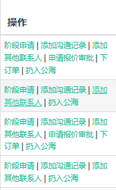

归属客户中的基本操作：阶段申请，添加沟通记录，添加其它联系人，申请报价审批，下订单，扔入公海

阶段申请：由现有阶段申请进入其它阶段，可以跨阶段申请，向前或向后都可以。业务经理和业务员在归属客户中的阶段申请中看到之前阶段申请和批准的记录。
添加沟通记录：业务员的归属客户要在系统中添加沟通过记录，时间间隔不得超过设定的”沟通客户飞入公海间隔”。
填写沟通内容，并填写下次沟通时间，系统会根据设定的“下次沟通时间”在当天做出提醒。
添加其它联系人：为该客户添加其它联系人。可以添加多个联系人。
申请报价审批：必须进入“报价阶段”之后该操作才会出现，才能申请报价审批。
填写申请内容，上传附件，提交申请。
下订单：必须进入“签单收款阶段”之后该操作才会出现。选择“下订单”，填写订单信息，上传订单合同和订单附件，提交申请。提交之后，生成订单，您可以在“订单管理”中看到订单信息。
扔入公海：将相应客户扔入公海。